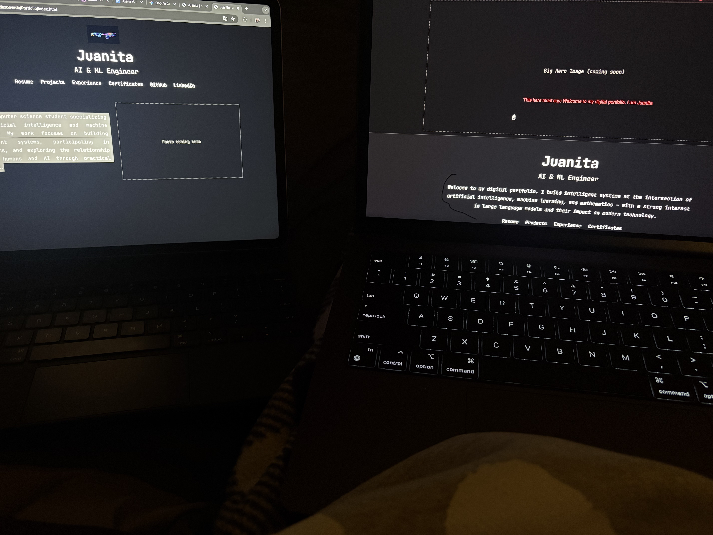
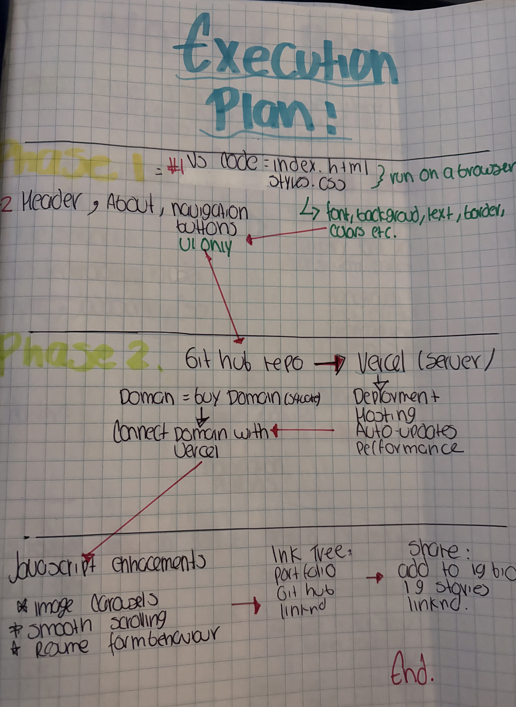
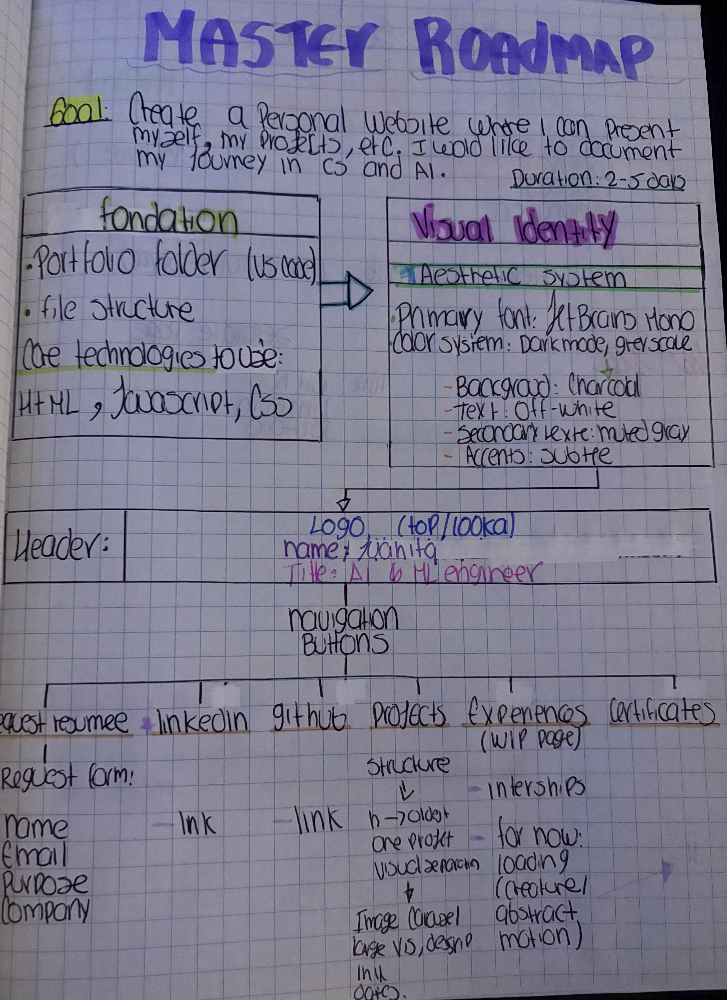
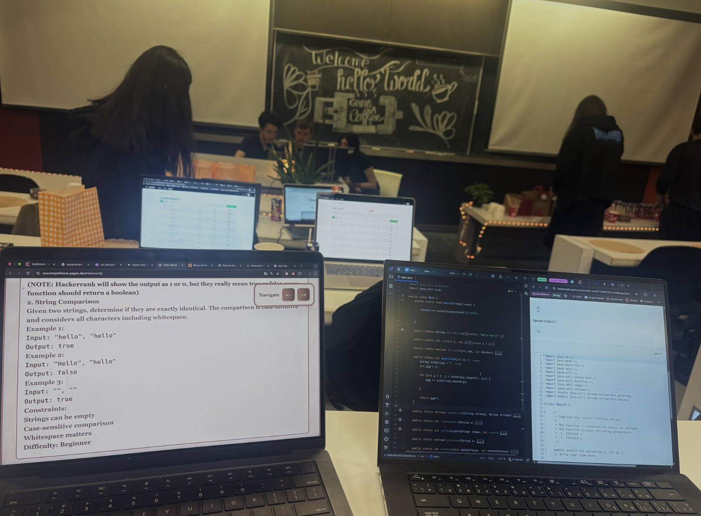
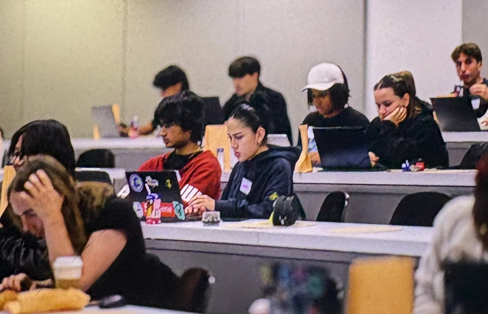

Developed an end-to-end supervised Machine Learning pipeline for binary network intrusion classification using the UNSW-NB15 dataset. Implemented data quality auditing, EDA, group-aware validation, One-Hot Encoding, and Random Forest classification against a DummyClassifier baseline. Achieved a 91.85% F1-score and 97.11% malicious-class recall on the official historical test dataset, while documenting duplicate observations, train/test overlap, and evaluation limitations.




Built my personal portfolio website entirely from scratch. As a first-year CS student, I planned everything with handwritten roadmaps, then brought it to life in VS Code, end to end. Featuring GitHub-dark vibes, smooth transitions, and multiple pages (Home, Projects, Experience, Certificates,etc).


The Hello World competition marked my first formal programming challenge. I solved algorithmic riddles under time constraints and submitted solutions via HackerRank, demonstrating my ability to perform under pressure in a collaborative environment.